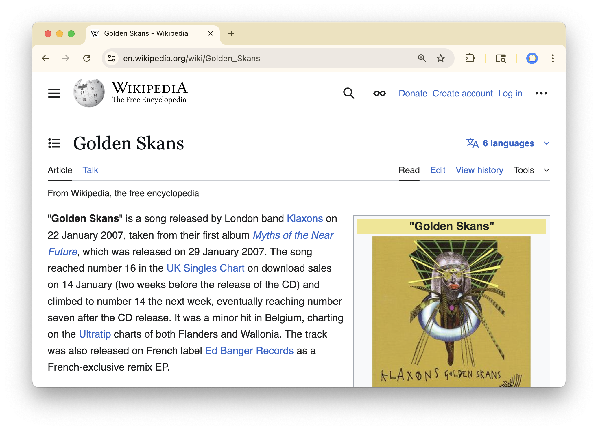

Data in Trees
Structuring and Navigating Files
Terminology
File
A named container that stores data – such as text, images, or programs – on a computer disk. The file name usually ends in an extension (.txt, .png, .pdf) that indicates the format.
Example

Directory (or folder)
A named container that stores a set of files or other folders.
How should we organize our cards into directories?
Boardwork.
How can we specify the location of a file/directory in the file system?
Path
A description of a file or directory’s location in the file system, written as a sequence of folder names that leads to it, separated by /.
Absolute path: Starts from the root of the file system, indicated by /. Example: /Documents/Schoolwork/HW1.pdf
How can we specify the location of a file/directory in the file system?
Path
A description of a file or directory’s location in the file system, written as a sequence of folder names that leads to it, separated by /.
Absolute path: Starts from the root of the file system, indicated by /. Example: /Documents/Schoolwork/HW1.pdf
Relative path: Starts from the current directory and shows how to reach a target. .. means “go up one level”. Example if you’re in Documents, Schoolwork/HW1.pdf
I’m getting tired of always typing the trunk of the tree…
Home directory
A special designated directory in a file system that serves as a starting point for commonly-used paths.
Written as ~, a shorthand for its absolute path.
Demo: Stat DataHub
The Command Line (aka Terminal)
Getting around a file system
We will need to . . .
- Know where we are
- Know what’s around us
- Change where we are
- See what’s in a file
. . . all without pointing and clicking.
UNIX1 Commands
pwd
Returns your present working directory.
ls
Lists the contents of your present working directory.
cd
Changes your directory to the path provided (after a space). Examples:
cd Homework: (relative) only takes you into theHomeworkdirectory if you’re inDocuments.cd /Document/Homework: (absolute) takes you into theHomeworkdirectory regardless of yourpwd.
cat
Prints to the screen the contents of the file at the path provided. Example: cat 127.txt.
UNIX Commands
- Know where we are:
pwd - Know what’s around us:
ls - Change where we are:
cd - See what’s in a file
cat
There are many more, like . . .
- Make a new directory:
mkdir - Copy a file:
cp - Remove a file:
rm
Practice: Stat DataHub
Practice on a sample of our index cards on a cloud-hosted machine that has a directory containing sample of our index card files.
Login Here:
Practice
10:00
Using only the command line (not the file browser).
- What are the names of the files stored in
~/data-in-trees/red/stat/101/1/? - What is the absolute path of the file named
014.txt? - What is the relative path of the file named
014.txtfrom~/data-in-trees/red/non-stat? - What is the relative path of the directory at
~/data-in-trees/green/stat/from~/data-in-trees/red/non-stat? - What is the song of the summer in
~/data-in-trees/red/non-stat/101/1/003.txt?
Solutions
Solution 1
What are the names of the files stored in ~/data-in-trees/red/stat/101/1/?1
One way is to move into the directory, then list its contents:
Solution 2
What is the absolute path of the file named 014.txt?
An absolute path starts from the root /. Searching the tree, 014.txt lives inside red/stat/101/1/, so relative to home it is:
Remember ~ is shorthand for home’s absolute path. On DataHub home is /home/jovyan, so the fully-written absolute path is:
You can confirm the home path by running pwd after cd ~.
Solution 3
What is the relative path of the file named 014.txt from ~/data-in-trees/red/non-stat?
From red/non-stat, step up one level (..) to red, then descend into stat/101/1/:
Solution 4
What is the relative path of the directory at ~/data-in-trees/green/stat/ from ~/data-in-trees/red/non-stat?
From red/non-stat, step up two levels: .. reaches red, and ../.. reaches data-in-trees. Then descend into green/stat:
The two colors (red, green) sit at the same level, so any path between them must first climb up to their shared parent, data-in-trees.
Check it by walking the path yourself. First confirm where you are:
Solution 5
What is the song of the summer in ~/data-in-trees/red/non-stat/101/1/003.txt?
So the song is lebi tirar mas fotos (the second line, 5200, is the accompanying count).
For Next Time
- Fill out the Stat 133 Welcome Survey
- Work on the first questions from PS 1